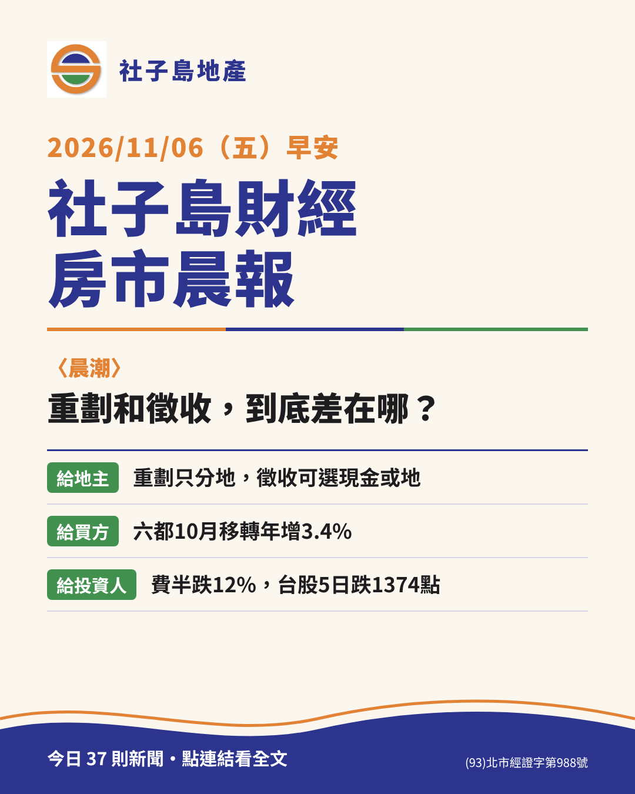

2026/11/06 (五) 早安
社子島財經房市晨報｜重劃和徵收，到底差在哪？
今日 37 則財經與房市新聞，依主題分成 10 類，社子島、主商圈與台北市的新聞排在最前面。點標題就能開啟原文。
〈潮汐表〉今天的三道潮水
- 給地主市地重劃分回的是土地，地主負擔有上限；區段徵收可選現金補償或申領抵價地。社子島走區段徵收，細節以市府公告為準。
- 給買方10月六都移轉年增3.4%，北部買氣增、中南部氣虛；台北北投吃輝達紅利、蛋黃區轉弱，看房先看區域分化。
- 給投資人美股5日道瓊重挫1,833點、費半跌12.25%、台積電ADR跌10.78%；台股5日跌1,374點收41,574點，台幣收32.876元。
〈晨潮〉
重劃和徵收，到底差在哪？
昨天阿公在坤天亭下棋，聽老朋友說女兒住的地方在辦市地重劃，回頭問我們：「伊遐是市地重劃，阮遮是區段徵收。這兩款到底差佇佗位？為啥物阮遮毋是重劃？」今天週五，正好是我們聊市地重劃的日子，就把這兩條路並排看一次。
先說市地重劃。它像是把一片零碎、歪斜的田地重新排過：土地始終是地主的，政府或地主自己組織起來，把道路、公園、溝渠等公共設施的用地，以及工程費用，由區內地主按比例一起負擔，剩下的土地重新整理成方正、臨路的建地，原則上照原來的位置分回去。依《平均地權條例》第60條，地主共同負擔的土地以不超過重劃區總面積45%為限（另有例外規定）；也就是說，重劃拿回來的是土地，沒有「領現金走人」這個選項，只有分配面積太小的才改發現金。
區段徵收不一樣。政府先把區內的私有土地全部徵收，整片重新規劃、施工，公共設施用地由政府取得，蓋完之後再把一部分可建築的土地，以「抵價地」發還給申請的地主；其餘土地由政府標售、標租或設定地上權，來償付開發費用。依《土地徵收條例》第39條，抵價地總面積以徵收總面積50%為原則，特殊情形經核准可以降低，但不得少於40%；地主也可以不領地、直接領現金補償，這是兩條路最大的不同。
那為什麼社子島不是重劃？《土地徵收條例》第4條列出可以辦區段徵收的情形，像新設都市地區的開發建設、把農業區或保護區變更為建築用地，都在其中。社子島要從長年禁建的狀態，整片改成可以建築的土地，還要把堤防加高、地面墊高、重新拉道路與排水，公共設施與工程的份量很重；一般認為，這樣從頭打造的開發，用重劃的負擔上限很難支撐，所以市府在社子島的都市計畫中選擇了區段徵收。實際理由與條件，以都市計畫書與市府公告為準。
市地重劃與區段徵收，三個地方不一樣
- ① 土地歸誰：重劃過程中土地仍是地主的；區段徵收是政府先全部徵收，再發還抵價地。
- ② 分回多少：重劃地主負擔以不超過總面積45%為限；區段徵收抵價地以50%為原則、不得少於40%。
- ③ 能不能領現金：重劃原則上只分回土地；區段徵收可以選現金補償或申領抵價地。實際以各案公告為準。
最後提醒：兩條路沒有誰一定比較好，差在地主能選什麼、要負擔什麼、多久能拿回土地。今天主商圈的新聞，兩位市長候選人對社子島與松山機場誰先誰後仍各有說法；另外，美股與台股5日都大跌，提醒大家先穩住步伐、看清楚自己的資金安排，往下滑就能看到。
——社子島地產團隊
主商圈：社子島・北士科・關渡洲美平原5 則
社子島開發與松山機場遷建誰先誰後，兩位市長候選人隔空再交鋒；市府重申戶戶安置、先安置後拆遷、分期分區
台北市3 則
臨沂映華公辦都更招商；台北前10月移轉年增，北投吃輝達紅利、蛋黃區轉弱
市地重劃・區段徵收4 則
週五談市地重劃：台南推自辦重劃管理維護自治條例，重劃區公設要提撥5%養護；永康崑大、桃園小檜溪重劃區機能陸續到位
利率・房貸・資金3 則
熱錢出走，新台幣盤中逼近33元、收32.876元；金管會說風險可控
房市走向3 則
10月六都移轉年增3.4%，北部買氣增、中南部氣虛；南科擴廠帶動周邊住宅需求
土地・產業用地2 則
桃園幼獅工業區三千坪工業地標售；台中烏日8,500坪工業地11/25開標
都更・合建4 則
北市都更成選戰焦點：無限都更、降門檻、7599專案動工數各說各話
稅務與法律實務4 則
地價稅繳到11/30：稅單有誤11/30前查對、不服12/30前復查；賣繼承房，持有期間可合併計算
高齡與人口1 則
全國僅老人居住宅近92萬宅，一人獨居首破70萬宅
今日財經大事8 則
美股5日道瓊重挫1,833點、費半跌12.25%、台積電ADR跌10.78%；台股5日跌1,374點收41,574點，外資賣超1,024億；台指夜盤跌2,946點
〈阿公講古〉
週五早上，阿公和孫子走到威靈廟，廟埕的石板還帶著露水，幾位阿姆在旁邊整理剛摘的菜。
「原來重劃是地猶是家己的，徵收是先交予政府，才閣分轉來。」阿公點點頭：「難怪阮遮的人，一講著徵收，心肝頭就擽擽。」
他說年輕時颱風一來，堤防外的田全泡在水裡，大家就在廟前搭棚子煮大鍋飯，誰家有船就去載人。「地會變，堤會加高，毋過這間廟、這陣人，猶原佇遮。」孫子在旁邊聽著，說以後要把這些故事寫下來。
走回家的路上，阿公停在自家田邊，看了很久：「若是領抵價地，彼塊地欲分佇佗位？是會當家己揀，抑是愛抽籤？阮敢會分轉來原本這个所在？」
阿公的問題，我們明天回答。
〈廟口泡茶區〉
阿公說完，在廟口榕樹下坐了下來，茶已經泡好了。重劃還是徵收、分回多少、怎麼選，都可以帶著公文來一起看。
市地重劃也好、區段徵收也好，地會變成什麼樣子、能分回多少，我們陪您從計畫書開始讀起。
想問問您：您身邊有沒有親友的地辦過市地重劃？分回來的地，和原本差多少？打個電話告訴我們，下次泡茶時一起聊。
不急著成交。我們是守在堤邊的人，守著每一塊土地的權益，直到把它交到願意耕耘它的人手上。
📞 歡迎先來電 0922-252-969先通個電話聊聊，再約時間來廟口喝茶。
 掃描 QR code，加 LINE 好友LINE ID：@shezidao💬 加 LINE
掃描 QR code，加 LINE 好友LINE ID：@shezidao💬 加 LINE
社子島地產團隊｜service@shezidao.com.tw
台北市士林區延平北路九段288號
週一至週六 9:30–18:00（週四 9:30–13:30），週日公休📞 來電 0922-252-969
本站由社子島地產開發有限公司經營，為民間不動產資訊網站，非臺北市政府官方網站；政府公告請以臺北市政府與地政局網站為準。
本期新聞由社子島地產團隊自經濟日報、聯合新聞網、中央社、自由時報、中時新聞網、公視新聞網、中央廣播電臺、太報、三立新聞網、鉅亨網、風傳媒、NOWnews今日新聞、新頭殼、理財周刊、鏡週刊、591新聞、蕃新聞、台灣事實查核中心、Yahoo奇摩新聞 等媒體收集，標題照原文，點擊即可開啟原始報導；法規說明僅供參考，實際權利義務以主管機關公告為準。〈晨潮〉〈阿公講古〉為本團隊之參考意見，不構成投資建議，亦不代表支持任何候選人。〈阿公講古〉的阿公，是我們依島上長輩的身影寫成的人物。